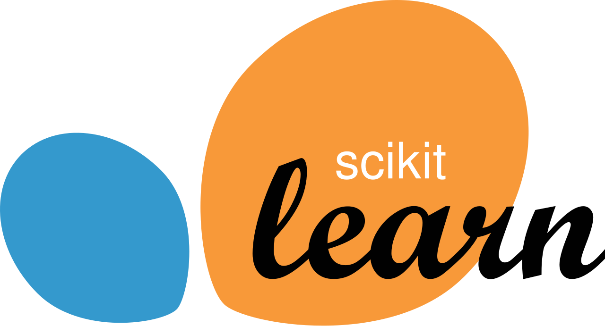
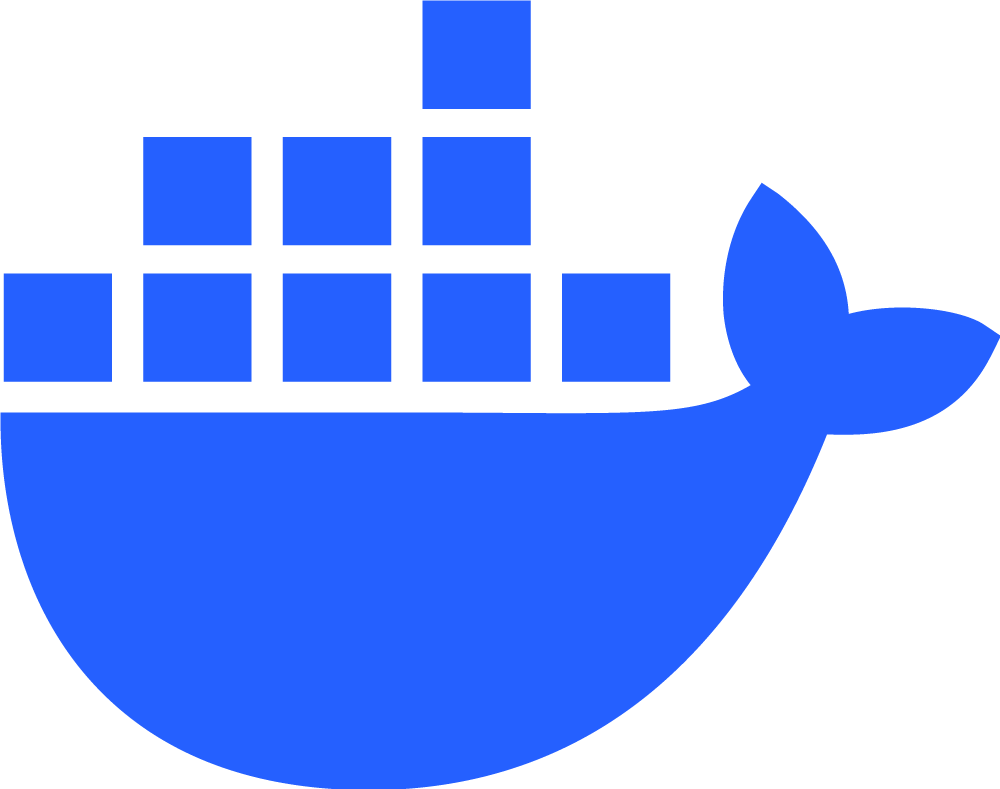

Tu conocimiento, más cerca con IA
DATARA es una plataforma de búsqueda y recomendación de artículos impulsada por inteligencia artificial, que te ayuda a encontrar la información más relevante en el mundo del conocimiento.
Búsqueda en lenguaje natural
Describe lo que te interesa y encuentra artículos relevantes al instante.
Recomendaciones inteligentes
Descubre contenido similar según tus intereses.
Resúmenes generados por IA
Lee un adelanto breve antes de abrir el artículo completo.
Contenido de múltiples fuentes
Artículos de diferentes temas y categorías en un solo lugar.
Un stack moderno para un proyecto de alto impacto
Usamos tecnologías de vanguardia para construir una solución robusta, escalable y preparada para el futuro.
Python
Lenguaje base del backend, el procesamiento de datos y los modelos.
PyTorch
Motor con el que se entrena y ejecuta el modelo de resúmenes.
Hugging Face
Librerías transformers y peft para ajustar el modelo con LoRA.
Qwen
Qwen3-1.7B, el modelo base que genera los teasers.

scikit-learn
Procesamiento del texto para la búsqueda BM25 de artículos.
AWS
SageMaker, ECS Fargate, RDS, S3 y CloudFront en la nube.
PostgreSQL
Base de datos relacional de los artículos.

Docker
Contenedores para entrenar y desplegar igual en todas partes.
Detrás de DATARA
Este proyecto fue desarrollado como parte de un trabajo de grado, combinando conocimientos en ciencia de datos, ingeniería de datos y desarrollo de software.